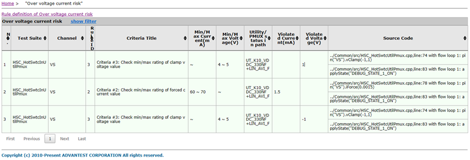
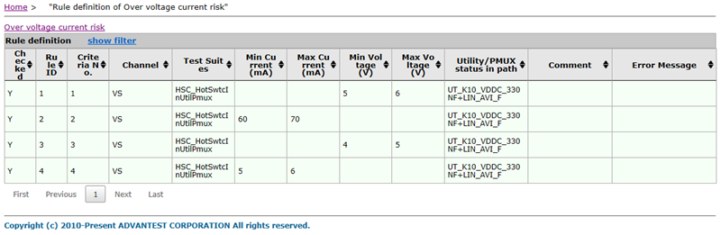

Overvoltage and overcurrent risk report
The overvoltage and overcurrent risk report lists the test suites which exceeds the voltage or current limits defined by the rules.
Overvoltage and overcurrent risk
This table shows the overvoltage and overcurrent risks detected by the release checker.

- No.
- The index number of the reported risk.
- Test Suite
- The name of the test suite in which the overvoltage or overcurrent risk was found.
- Channel
- The channels or channel groups checked by the release checker.
- Rule ID
- The ID of the rule as shown in the preferences window.
- Criteria Title
- The criteria on which the rule was applied.
- Min/Max Current(mA)
- The minimum and maximum current limit defined in the rule.
- Min/Max Voltage(V)
- The minimum and maximum voltage limit defined in the rule.
- Utility/PMUX status in path
- The relay status on the utility or PMUX card.
- Violated Current(mA)
- The detected current which exceeds the defined current range.
- Violated Voltage(V)
- The detected voltage which exceeds the defined voltage range.
- Source Code
- The specific location of the reported risk in the source code, including the test method file name, the line number, and code.
Rule definition summary
This is the summary of the rules that have been defined in the preferences window.
For details of the column definition, see Preferences for overvoltage and overcurrent risk check.
You can filter the tables by entering text in the fields below the column header; after you press Return, only rows will be displayed in which the column contains the filter value.
To show and hide the filters, respectively, click the Show Filter and Hide Filter links in the table title.
You can sort the table by clicking the upward-pointing and downward-pointing triangles in the column titles.
If more than one page of results was found, you can browse the pages using the controls below the table.
Functional changes
- Introduced in SmarTest 7.4.3